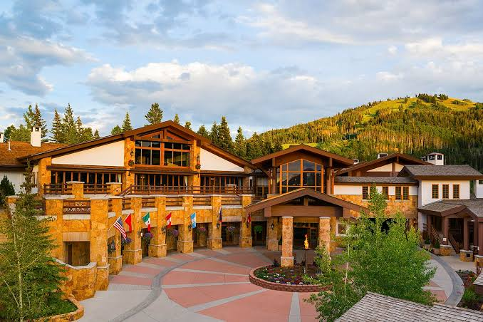
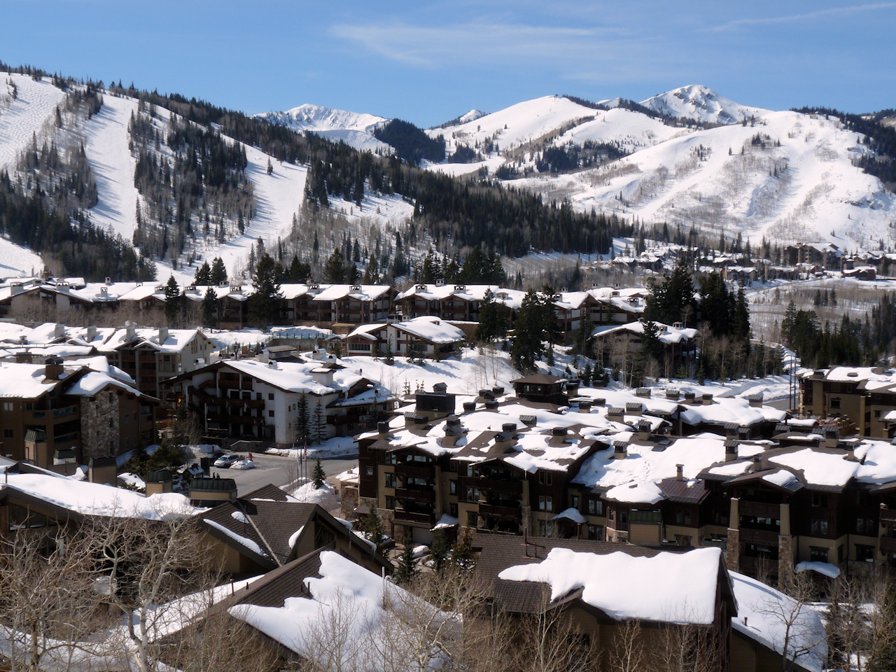

Image from: Grand Hotels

Image from: Flickr

Image from: Wikimedia Commons
What and Why?
Deer Valley is a luxury ski-only resort located in Park City, Utah, and prohibits snowboarding. It has a large appeal to the ski community by being one of the only in the nation to be exclusively ski-only. It includes six mountains and six bowls and 4,300 acres of skiable area, as well as including a modern, high-speed lift system. It's a great vacation spot for luxury dining, service, and housing/lodging, and especially for its activities and ski oriented resort.
Reasons to go there!:
- Skier-only and catered to skiers
- Year-round activities
- Great hospitality and benefits
- No overcrowding
- Yummy upscale dining
- Elite lodging and hotel options